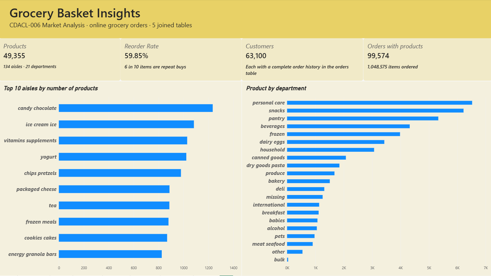
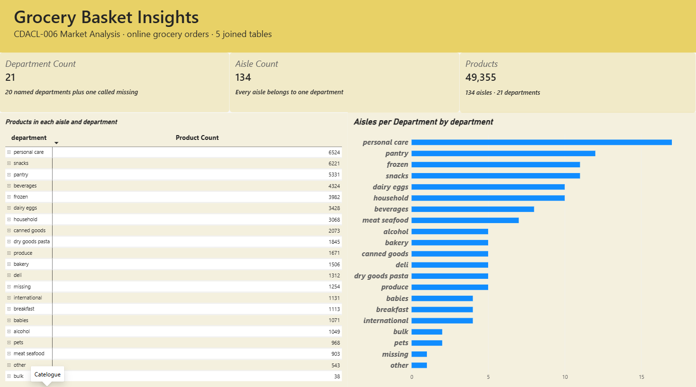
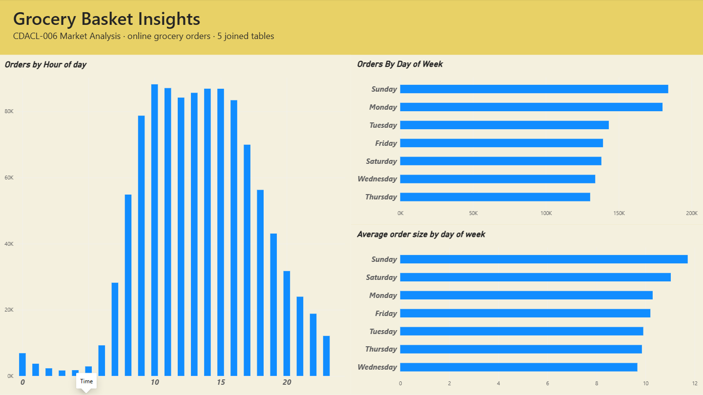
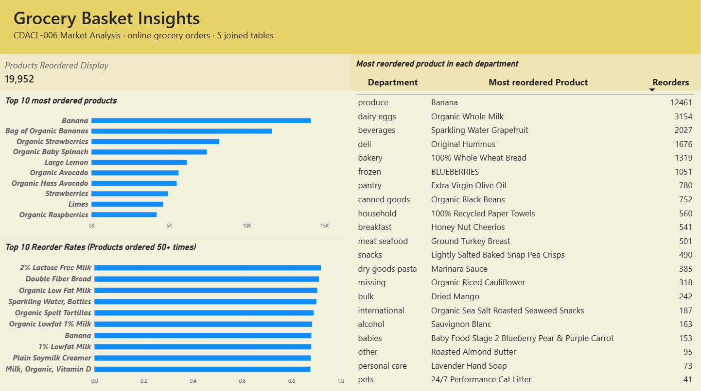
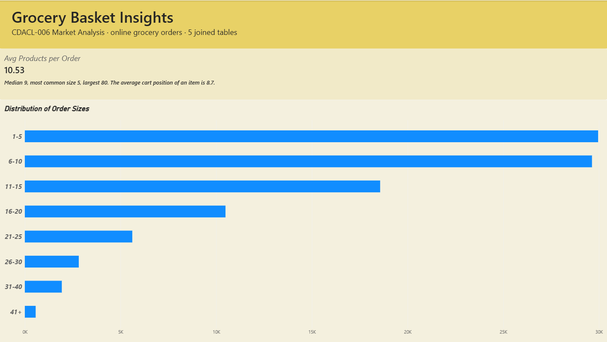
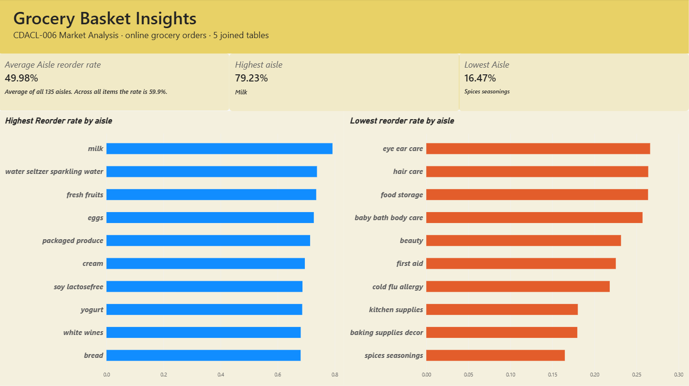
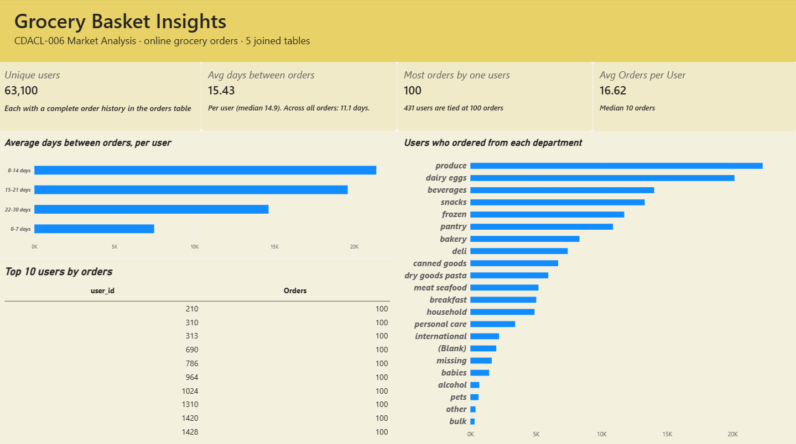
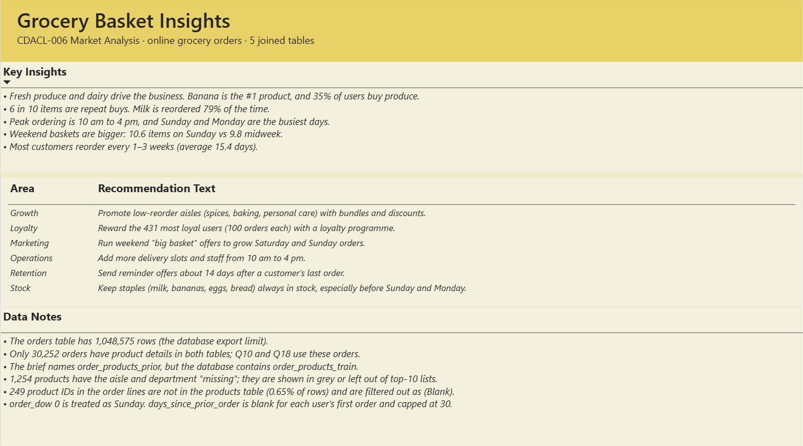

Grocery Basket Insights: what 63,100 shoppers buy, and when.
A market analysis for an online grocery store. I joined five database tables with over a million order rows, answered 20 business questions in an eight-page Power BI dashboard, and turned the results into six actions management can start this quarter.
Understand how customers shop, then use it to sell more.
The client, an online grocery store, wanted to know which products drive orders, when demand peaks and how loyal its customers are, so it could improve marketing and customer satisfaction. The brief came as 20 questions, which I grouped into four themes.
Catalogue
Aisles, departments and how the 49,355 products are spread across them.
Time
When customers order, by hour of day and day of week.
Products and baskets
Best sellers, reorder rates and how big an order is.
Customers
Users, gaps between orders, loyalty and aisle reorder rates.
Five tables joined in one model, checked before use.
All relationships are one-to-many and filter in a single direction. The order lines table sits in the middle as the fact table, with products and orders on either side.
aisle_id · department_id
add_to_cart_order · reordered
user_id · order_dow · order_hour_of_day · days_since_prior_order
Row counts shown on each table. products → order_products_train and orders → order_products_train are both 1 → *.
| Issue found | How I handled it |
|---|---|
| days_since_prior_order blank for 63,100 first orders | Kept blank. A first order has no previous order. |
| 1,254 products with aisle and department “missing” | Kept in totals, shown grey, left out of top-10 lists. |
| 249 product IDs not in the products table (0.65% of rows) | Filtered out as (Blank) in charts. |
| Only 30,252 orders appear in both order tables | Used those for the day-of-week and users-per-department questions. |
| Brief names order_products_prior | The database has order_products_train, so I used that. |
| order_dow is a number 0–6 | Added a Day Name column (0 = Sunday), sorted by order_dow. |
-- Measures Total Orders = DISTINCTCOUNT(order_products_train[order_id]) Unique Users = DISTINCTCOUNT(orders[user_id]) Reorder Rate = AVERAGE(order_products_train[reordered]) Avg Products per Order = DIVIDE([Total Items Ordered], [Total Orders]) Users per Department = CALCULATE(DISTINCTCOUNT(orders[user_id]), CROSSFILTER(order_products_train[order_id], orders[order_id], BOTH)) -- Columns and tables Day Name = SWITCH(orders[order_dow], 0,"Sunday", … 6,"Saturday") Order Sizes = SUMMARIZE(order_products_train, [order_id], "Size", COUNTROWS(…)) User Gaps = SUMMARIZE(orders, [user_id], "Avg Gap", AVERAGE([days_since_prior_order]))
Eight report pages, one for each part of the brief.
Each page answers a set of the 20 questions. Pick a page to see the screen and what it shows.

- 49,355 products, 59.85% reorder rate, 63,100 customers, 99,574 orders with products.
- Candy chocolate has the most products (1,235), then ice cream (1,084) and vitamins (1,030).
- Personal care (6,524), snacks (6,221) and pantry (5,331) are the biggest departments; bulk has only 38.

- 21 departments (20 named plus “missing”) and 134 aisles.
- The matrix shows the product count in every aisle under its department.
- Personal care spreads 6,524 products over 17 aisles; pantry uses 12.

- Orders rise from 7 am and peak at 10 am with 88,228 orders.
- Sunday (183,939) and Monday (180,025) are busiest; Thursday is quietest.
- Baskets are biggest on Sunday (11.6 items) and smallest on Wednesday (9.6).

- Banana is the most ordered product, then Bag of Organic Bananas (11,639).
- 2% Lactose Free Milk has the highest reorder rate (92%); 6 of the top 10 are milk.
- 19,952 products were reordered more than once (54%). The table lists the top repeat product in each department.

- An order has 10.5 products on average (median 9).
- The most common size is 5 items; the largest order has 80.
- 60% of orders have 10 items or fewer; only 2.5% have more than 30.

- Milk has the highest aisle reorder rate (79.2%), then water and fresh fruit.
- Spices and seasonings is lowest (16.5%), with baking and kitchen supplies.
- The average aisle reorder rate is about 50%.

- 63,100 unique users, ordering every 15.4 days on average.
- The biggest group orders every 8–14 days (21,379 users).
- Produce reaches 22,303 users and dairy eggs 20,153; 431 users are tied at 100 orders.

- Key insights in plain language for management.
- Six recommendations grouped by area: stock, operations, marketing, retention, growth and loyalty.
- Data notes covering the export limit, missing aisles and the Sunday assumption.
Customers come back for the same fresh staples, at predictable times.
Banana is the top product with 14,136 orders. All ten best sellers are fruit or vegetables, and six of them are organic.
Fresh food is the business
Six in ten items in every basket are repeat buys. Milk is the most loyal aisle at 79%, and 2% lactose-free milk is reordered 92% of the time. Produce reaches 74% of matched customers.
Demand starts the week high
Sunday (183,939 orders) and Monday (180,025) carry a third of the week. Orders climb from 7 am and peak at 10 am with 88,228 orders. The store is almost idle between midnight and 6 am.
Weekend baskets are bigger
Sunday orders average 11.6 items against 9.6 on Wednesday. Most orders are small top-ups: the average is 10.5, the most common size is 5, and the largest is 80.
A loyal core shops far more often
431 customers have placed 100 orders each, the highest in the data. With the 7,489 weekly shoppers they are the most valuable group. The average customer has 16.6 orders.
All 20 questions and answers show table
| Q | Question | Answer |
|---|---|---|
| Q1 | Top 10 aisles by products | Candy chocolate 1,235; ice cream 1,084; vitamins 1,030 |
| Q2 | Unique departments | 21 (20 named + “missing”) |
| Q3 | Products across departments | Personal care 6,524; snacks 6,221; bulk 38 |
| Q4 | Top reorder rates (50+ orders) | 2% Lactose Free Milk 92.0%; 6 of 10 are milk |
| Q5 | Unique users | 63,100 |
| Q6 | Avg days between orders per user | 15.4 days (median 14.9) |
| Q7 | Peak hours | 10 am (88,228 orders); busy 10 am–4 pm |
| Q8 | Orders by day of week | Sunday 183,939 and Monday 180,025 highest |
| Q9 | Top 10 most ordered products | Banana 14,136; Bag of Organic Bananas 11,639 |
| Q10 | Users per department | Produce 22,303; dairy eggs 20,153 |
| Q11 | Avg products per order | 10.5 (median 9, max 80) |
| Q12 | Most reordered per department | Banana (produce) 12,461; Organic Whole Milk 3,154 |
| Q13 | Products reordered more than once | 19,952 of 36,615 ordered products (54%) |
| Q14 | Avg products added to cart per order | 10.5; average cart position 8.7 |
| Q15 | Orders by hour of day | Low at night (3 am: 1,649), rise from 7 am, fall after 4 pm |
| Q16 | Order size distribution | 1–5 items: 29,956 orders; 60% have ≤ 10 items |
| Q17 | Avg reorder rate per aisle | Milk 79.2% highest; spices 16.5% lowest; average about 50% |
| Q18 | Avg order size by day | Sunday 11.6 items; Wednesday 9.6 |
| Q19 | Top 10 users by orders | 431 users tied at 100 orders; average 16.6 |
| Q20 | Products per aisle and department | 134 aisles; personal care 17 aisles, 6,524 products |
Six actions, in the order I recommended them.
Start with the two that protect today’s repeat business, then add the four that grow it.
| # | Action | Why | Expected benefit |
|---|---|---|---|
| 1 | Never run out of the top staplesMilk, bananas, berries, eggs and bread. Add extra stock before Sunday and Monday. Protect | These products are reordered 70–92% of the time and drive the busiest days. | Fewer missed orders and disappointed regulars. |
| 2 | Add delivery slots and staff at peak10 am to 5 pm, and on Sunday and Monday. Protect | 57% of orders arrive in this window; Sunday and Monday carry 35% of the week. | Shorter delivery times and better satisfaction. |
| 3 | Weekend “big basket” offersFree delivery over a set basket size, or meal bundles. Grow | Customers already buy 11–12 items at the weekend. | Larger weekend baskets. |
| 4 | Reorder reminders around day 14Sent after a customer’s last order, with their usual items ready to add. Grow | The typical customer reorders every 15 days. | More customers return on time; win back the 22–30 day group. |
| 5 | A loyalty programmeFor the 431 most frequent customers and the 7,489 weekly shoppers. Grow | A small group places a large share of orders. | Keeps the most valuable customers. |
| 6 | Bundle low-reorder aisles with staplesSpices, baking, kitchen, health and beauty. Grow | These aisles are reordered only 16–27% of the time. | More items per basket from occasional categories. |
A guided tour of the report.
A recorded walkthrough of the Power BI dashboard, page by page, explaining what each chart shows and what it means for the business.
What the data can’t tell us yet.
The data has no prices, so performance is measured by orders and reorders rather than revenue. Exact totals would be somewhat higher with the complete history.
- The orders and order lines tables stop at 1,048,575 rows, the database export limit.
- Only 30,252 orders appear in both order tables; Q10 and Q18 use these.
- 1,254 products have no aisle or department, and 249 product IDs are unknown.
- order_dow 0 is assumed to be Sunday; days_since_prior_order is capped at 30.
- Agree which of the six actions to start this quarter.
- Share the Power BI dashboard with the stock, delivery and marketing teams.
- Pilot the 14-day reorder reminder and measure the return rate.
- Refresh the analysis with the full order history once it is available.